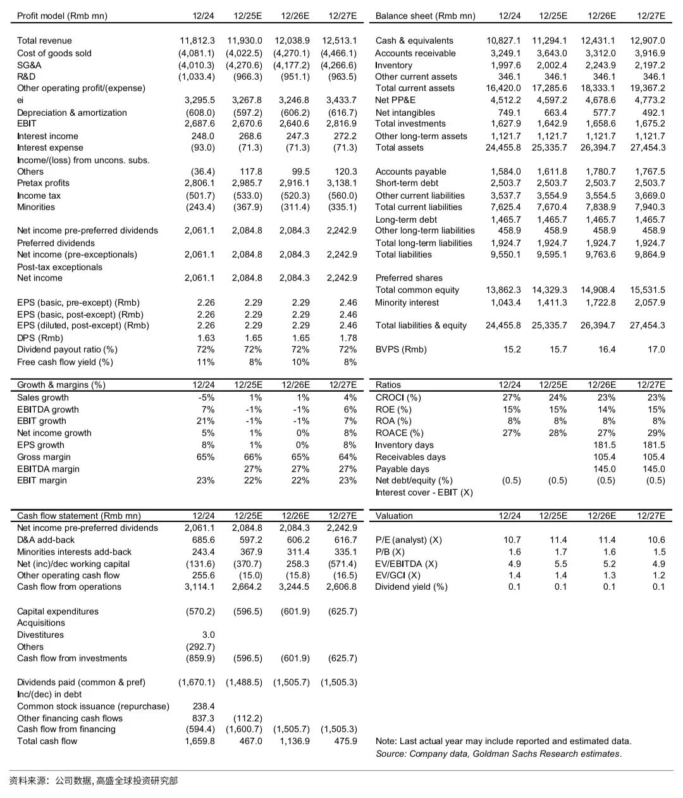
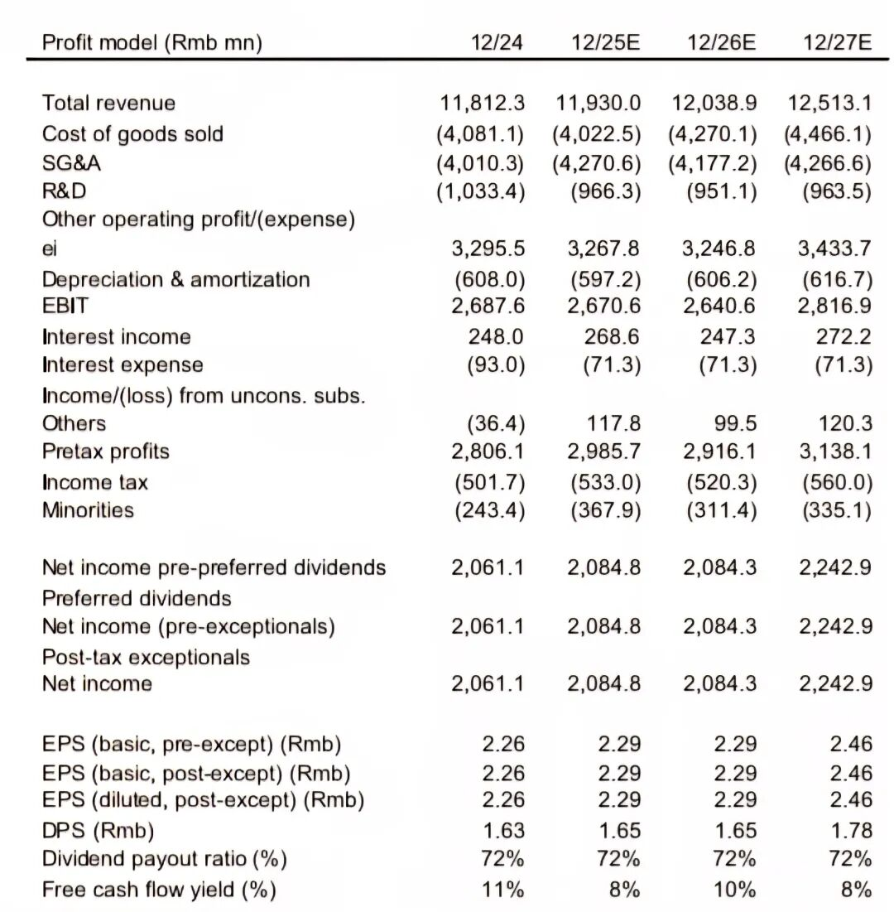
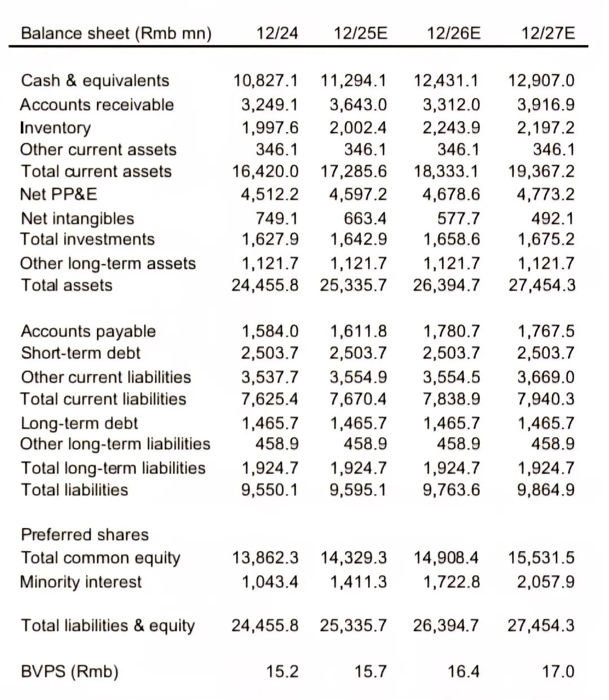
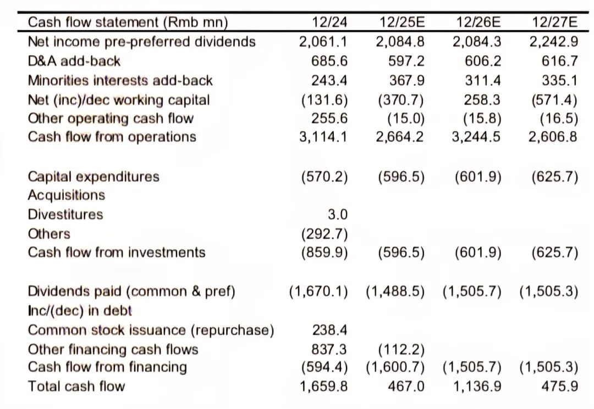
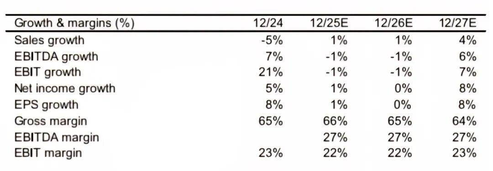
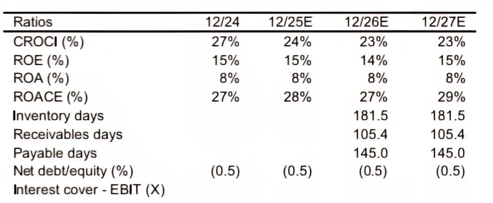

一、 财务报表分析列示维度
优先从三大报表中提取与投资决策强相关的核心项目，而非罗列全部科目，其他不重要科目一起归集，不用列示：
1. 利润表（Profit Model，核心关注盈利结构、盈利能力及股东回报）
1）列示报表科目
- 营业收入
- 销货成本
- 销售和管理费用
- 研发费用
- 利息收入/利息费用
- 税前利润
- 所得税费用
- 少数股东损益
- 归母净利润（优先股息/一次性损益影响）
2）其他与投资决策相关性低的科目可以合并列示到Other operating profit/expense、Others里
3）EBIT/EBITDA
- EBIT/EBITDA：剔除资本结构、税收、折旧影响，衡量主业核心盈利。
4）每股指标
- EPS（基本/摊薄）：股东视角核心盈利指标，为P/E估值提供基础数据。
- DPS（每股股息）
5）股息、现金流
- 股息支付率：衡量对股东的现金回报力度，判断分红政策的稳定性与可持续性。
- 自由现金流收益率：结合盈利与现金流，评估股东实际回报水平，辅助估值判断。

2. 资产负债表
1）列示报表科目：按照流动性进行列示
流动资产：
- 现金及等价物
- 应收账款、存货
非流动资产：
- 固定资产净值、无形资产净值
- 长期股权投资
流动负债：
- 应付账款
- 短期借款
非流动负债：
- 长期借款
所有者权益：直接合并列示，无需展开
2）其他与投资决策相关性低的科目可以合并列示至Other current assets/liabilities、Other long-term assets/liabilities
3）每股指标
- BVPS（每股净资产）：为P/B估值提供核心数据支撑。
4）会计恒等式Check
汇总负债及所有者权益，与总资产进行对比，确保模型数据无误

3. 现金流量表：利润表和资产负债表预测完成之后，可生成现金流量表
按间接法编制现金流列示，通过利润表、资产负债表科目调整编制
- 经营活动现金流：净利润出发，加回折旧摊销，调整营运资金变化等，衡量主业造血能力。
- 投资活动现金流：资本性支出、并购/剥离）等。
- 筹资活动现金流：股、债。

二、 核心分析维度
1. 增长和盈利分析 Growth & margins％ （数据来源：利润表）
1）增长维度：
- 收入增长率
- EBITDA增长率
- EBIT增长率
- 净利润增长率
- EPS增长率
2）盈利维度：
- 毛利率
- EBITDA利润率
- EBIT利润率

2. 关键财务比率分析 Ratios（数据来源：资产负债表、利润表、现金流量表）
1）收益维度：
- CROCI％：投入资本现金回报率
- ROE％：净资产收益率
- ROA％：总资产收益率
- ROACE％：平均投入资本回报率
2）营运维度：周转天数

3. 估值维度：相对估值倍数
- P/E：市盈率
- P/B：市净率
- EV/EBITDA：企业价值/息税折摊前利润
- EV/GCI：企业价值/总投入资本，与CROCI指标配套使用
- Dividend yield％：股息收益率
分析框架总览：